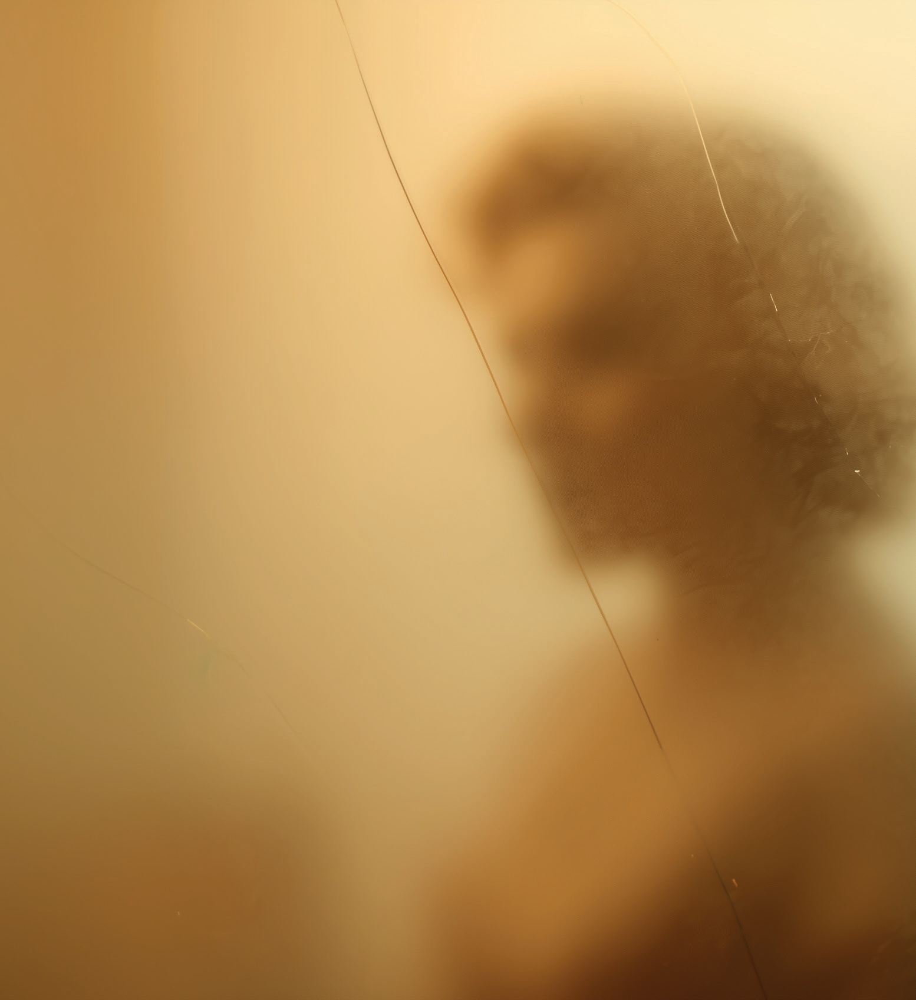
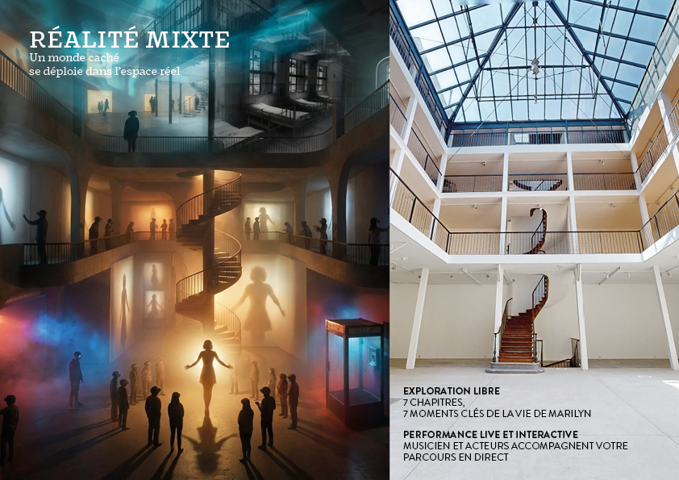

Marilyn

Marilyn
Behind each icon, a woman disappears.
Marilyn Monroe. Theatre / Mixed Reality.
Project associated with Morrison Hotel Gallery, Principe Actif and Swing Digital.
Marilyn
Mixed reality/theatre
The viewer is immersed in a liminal space where the soul of Marilyn Monroe remains prisoner, stuck between her reality and her myth, between Norma Jeane and the manufactured icon.
In this in-between, she cannot find rest, trapped by the collective projections and fantasies which have erased her true history.

To what extent do our representations define us?
When do they become an alienation?

Mixed reality
A hidden world unfolds in real space.
Free exploration: 7 chapters, 7 key moments in Marilyn's life.
Live and interactive performance: musician and actors accompany your journey live.